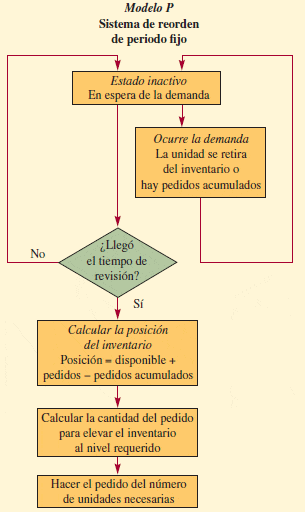
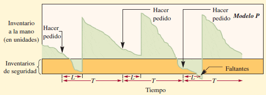

Características de un Sistema de Revisión Periódica de Inventarios o Modelo P
Un sistema de revisión periódica del inventario (conocido también como modelo P) es aquel en el cual el inventario de un ítem es revisado cada intervalos de tiempo fijos, y se realiza una orden por el monto apropiado, es decir, el tamaño de pedido varia con el comportamiento de la demanda. En relación a lo anterior la pregunta relevante es ¿cuánto ordenar?. Una de sus ventajas potenciales es que permite combinar ordenes a un mismo proveedor. El siguiente diagrama permite esquematizar la sistematización de un modelo de gestión de inventarios de revisión periódica o modelo P. En el sistema de periodo fijo, se toma la decisión de hacer un pedido sólo en algunos momentos, como cada semana o cada mes.
Generalmente un sistema de revisión periódica exige un nivel más alto de inventario de seguridad en comparación a un sistema de revisión continua (como por ejemplo en el caso del modelo EOQ). En este contexto y para tener una mejor idea de la evolución de los niveles de inventario en el tiempo para el modelo P se presenta el siguiente gráfico:
Nota: El tamaño de los pedidos es variable y depende de la cantidad de productos que quedan en el inventaro al momento de emitir el pedido.